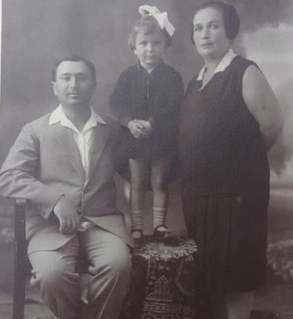
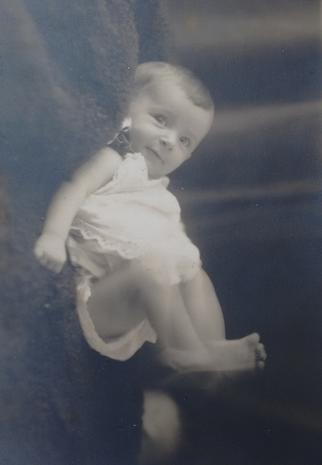
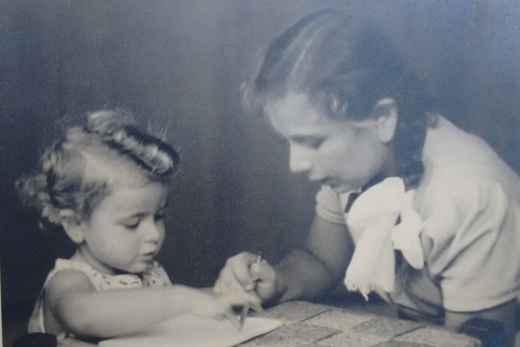
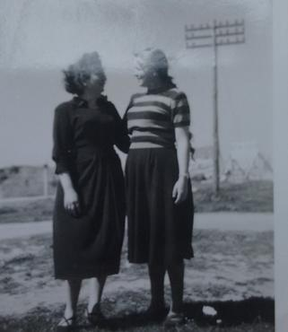

Biography
Batel Talmon was born in 1926 in Tel Aviv, to her parents, Moshe and Yonah Vernikov.


Her younger sister, Eva, was born a few years later (here she is with her):

In her youth, Tel Aviv was a small town (by modern standards), where “everybody knew everybody”. Batel grew up as a neighbor to Golda Meir, for example, whose son was her playmate in preschool. Of this time she recalled how, meeting the poet Hayim Nachman Biyalik on a bus, she asked him, to her mother's mortification, “Sir, why are you so fat?” (luckily, Biyalik was well known for his love of children and did not mind). She also recalled meeting the illustrator and painter Nachum Gutman (a colleague of her father), and was fascinated by seeing him draw.
Batel grew up in a Zionist home and, as the fight for the future of the ‘Jewish Homeland in Palestine’ (as the goal was then known) heated up, she joined the Palmach, the pre-state paramilitary organization, and was stationed inter alia in Ginosar. Below is a photo of her (left) from the period:

Batel left the Palmach – by then, incorporated into the newly-formed IDF – at the rank of captain in the 'Women's Force' (Heyl Nashim), the (rough) IDF equivalent of the British WACs in WWII.